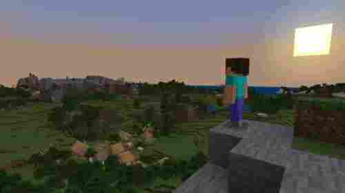

Minecraft has two alternative dimensions besides the Overworld (the main world): the Nether and the End.
The Nether is a hell-like underworld dimension accessed via either a player-built obsidian portal or one of the Ruined Portals randomly generated throughout the world. It contains many unique resources and can be used to travel great distances in the Overworld, due to every block travelled in the Nether being equivalent to 8 blocks travelled in the Overworld. Water cannot exist in the Nether, as it will vaporize instantly. The Nether is mainly populated by pigman-like mobs called piglins and their zombified counterparts, plus floating balloon-like mobs called ghasts. The player can also build an optional boss mob called The Wither out of materials found in the Nether.
The End is reached by underground portals in the Overworld. It consists of islands floating above a dark, bottomless void. A boss dragon called the Ender Dragon guards the largest, central island. Killing the dragon opens access to an exit portal, which, when entered, cues the game's ending credits and the End Poem, a roughly 1,500-word work written by Irish novelist Julian Gough, which takes about nine minutes to scroll past and is the game's only narrative text and only text of significant length directed at the player. At the conclusion of the credits, the player is teleported back to their respawn point and may continue the game indefinitely.
